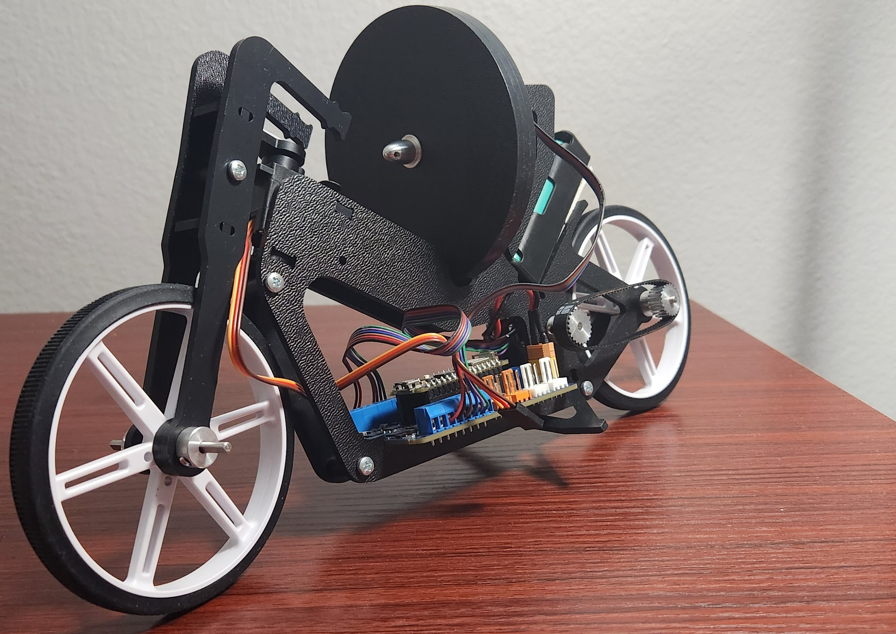
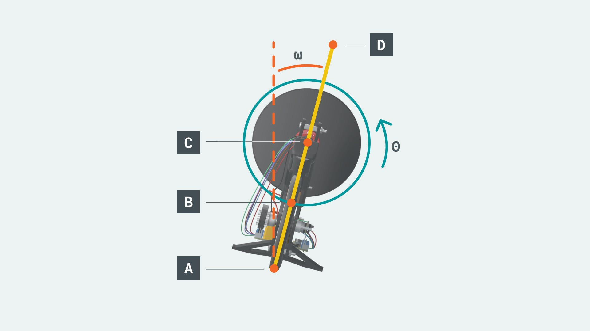
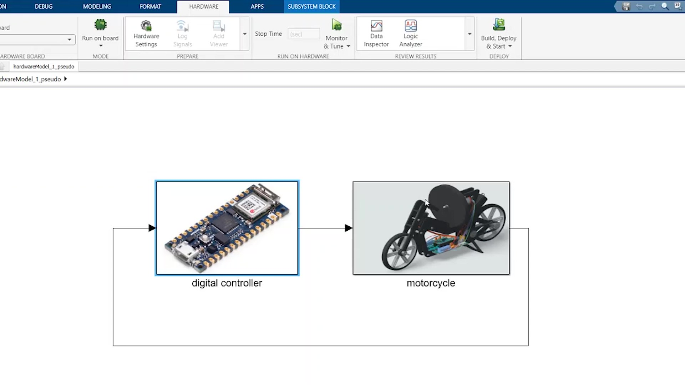
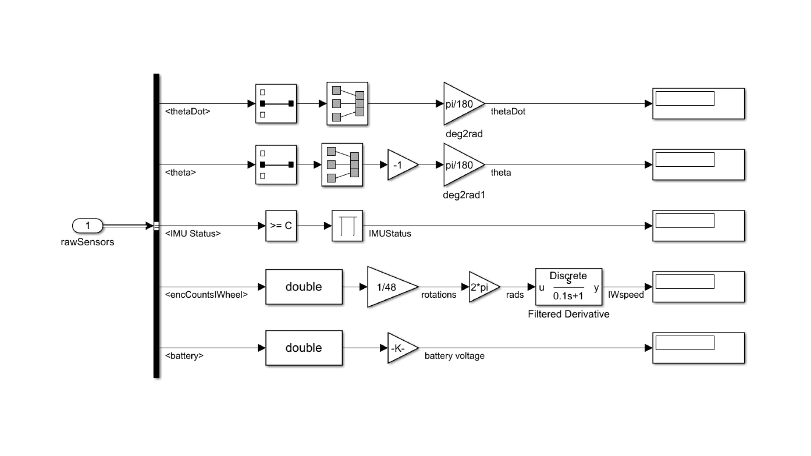
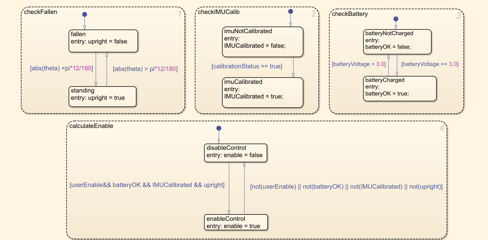
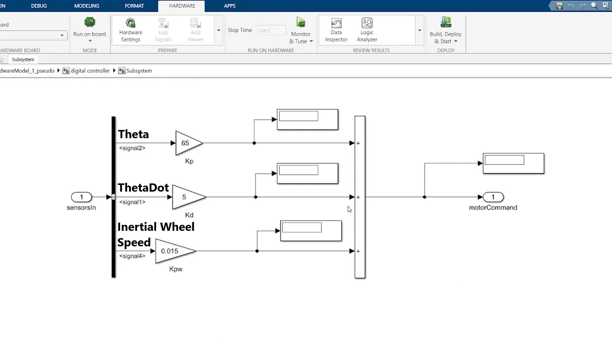

Self Balancing Motorcycle

Big Idea
The idea behind Self Balancing Motorcycle is to use the "Inertial Wheel or a Flywheel" on the back to balance the motorcycle. Observe that the problem behind "Balancing the motorcycle" can be analogous to the problem of "Balancing an Inverted Pendulum".
State Space model
The image below shows the notable points

- A - rotation axis of the revolute joint between pendulum rod and ground.
- B - center of the mass of the pendulum rod. Assuming the pendulum rod has a uniform density, B should be in the middle of A and D.
- C - rotation axis of the revolute joint between pendulum rod and inertial wheel.
- θ - angle of tilt of the motorcycle.
- ω - angular speed of the inertial wheel.
The final acceleration equaton of the inertial wheel is
Where
- mr - mass of the rod
- mw - mass of the inertia wheel.
- lAB - the distance between A and B.
- lAC - the distance between A and C.
- lAD - the distance between A and D.
- R - radius of the inertial wheel
- g - acceleration due to gravity
The final state space equation is as follows
Simulink Program
The overall simulink program is a closed loop control system, sensor data from the motorcycle sub-block is sent to the controller sub-block, the raw sensor data is preprocessed, PD controller and state flow logic is programmed in the controller sub-block and control commands to the motorcycle sub-block to control the motors.
The image below shows the overall structure of the simulink program.
Sensor Preprocessing
- The sensor data must be preprocessed before using it in the controller.
- The "Arduino nano 33 IOT" board used in the motorcycle consists of an inbuild BNO055 9-axis absolute orientation sensor from Bosch.
- A prebuild simulink block is used to read the sensor data and the status gives the calibration vector which is used to determine the calibration status of the sensor.
- The angular velocity (thetaDot) and Euler angle (theta) are filtered to select only the angular velocity and angle for "Roll" of the motorcycle. The "Roll" angle and rate is used to balance the motorcycle.
- Finally the angle and rates are converted to radians.
- The encoder in the Inertial wheel motor is used to determine the speed of the Inertial wheel. The encoder is 48 PPR (Pulse Per Revolution),hence multiplied by 1/48 to convert to rotations.
- The values are converted to radians and filtered.

State Flow Chart
The State flow chart shown below defines the logic for the motorcycle.
Controller
The closed loop control system is a simple PD controller as shown below
- Kp - proportional constant that controls theta.
- Kd - derivative constant that controls thetaDot
- Kpw - proportional constant to control inertial wheel's speed
- The P and D values are tuned to balance the motorcycle.
Working Video
The overall simulink block diagram and working of the motorcycle is shown in the video below